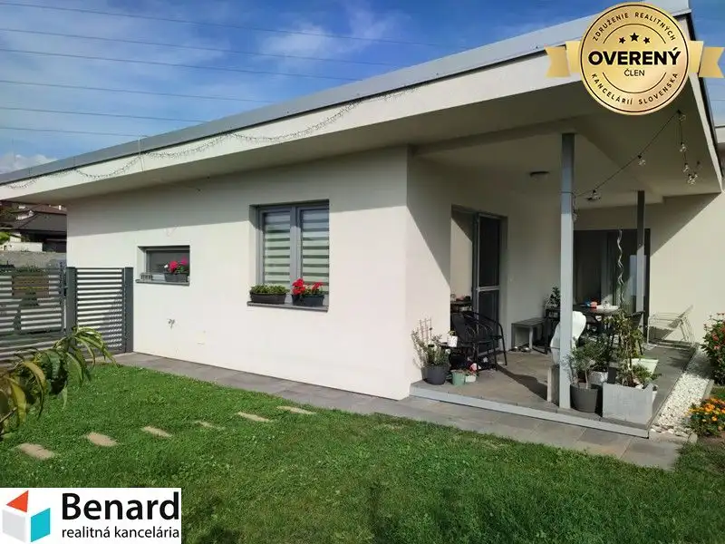
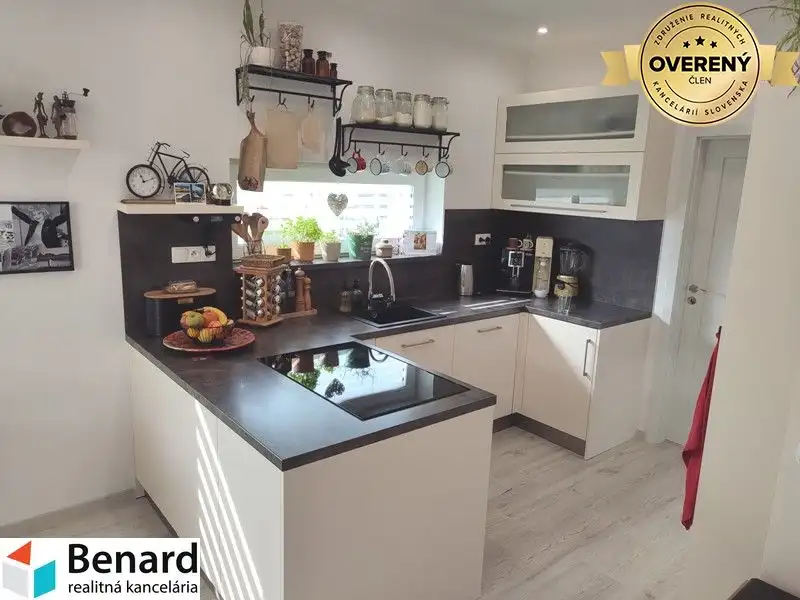
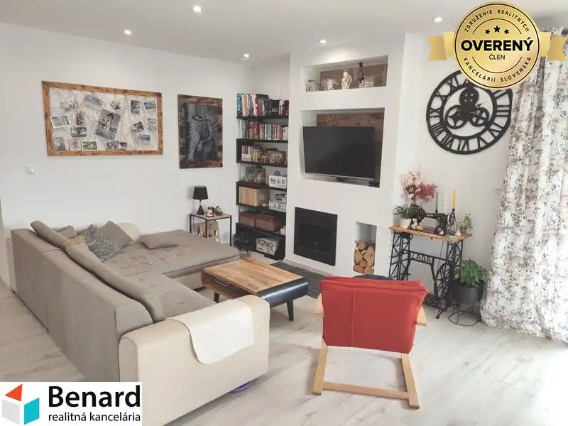
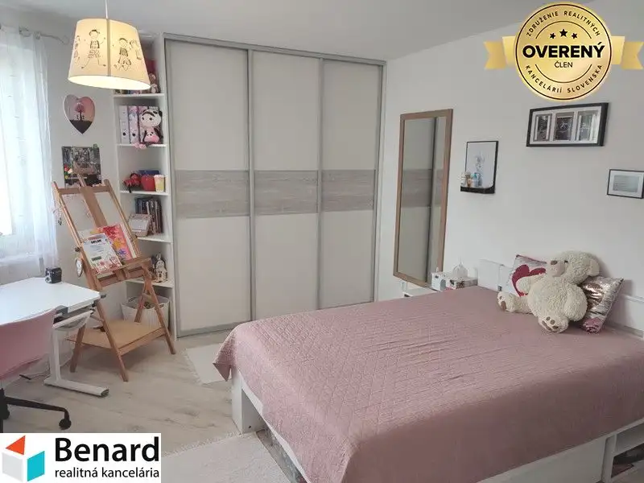
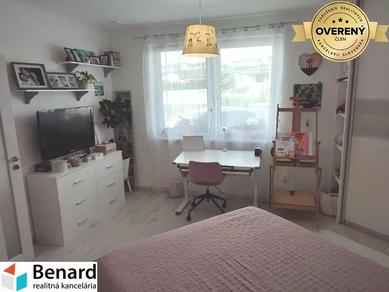
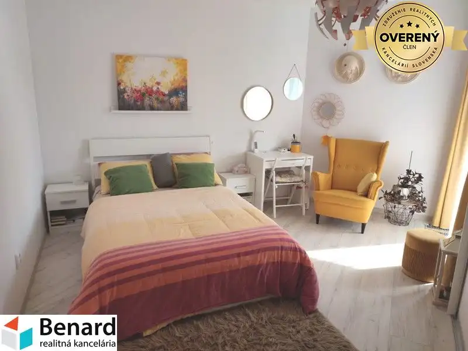
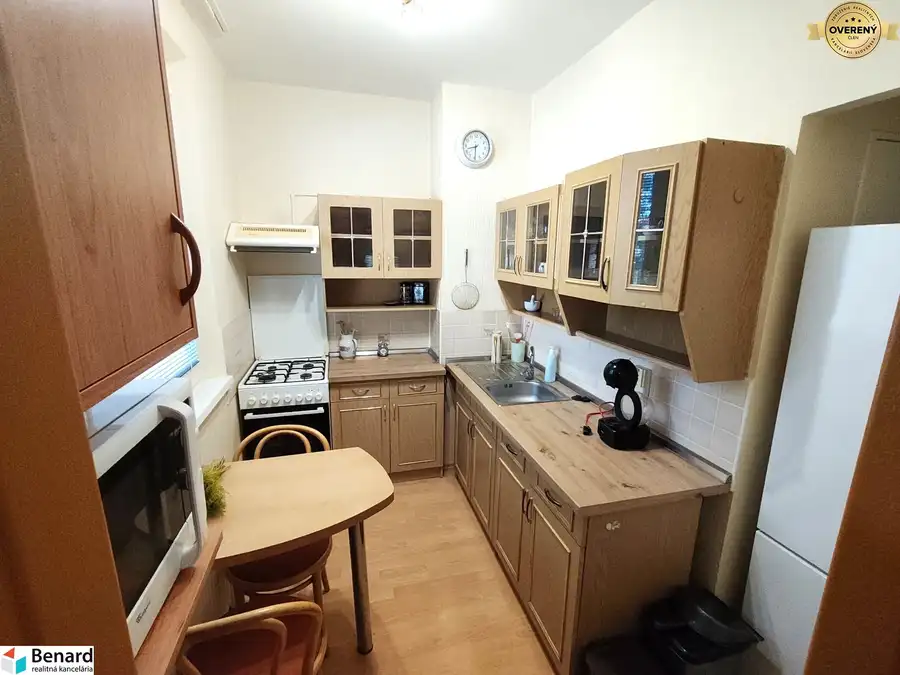
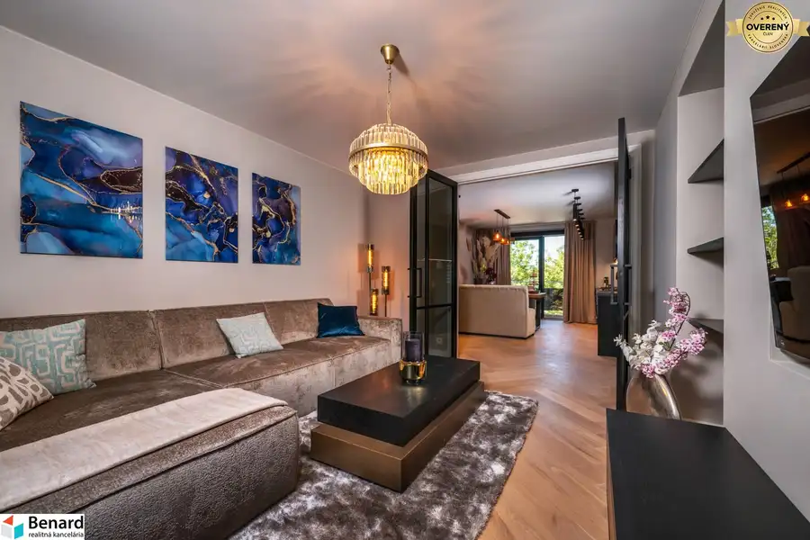
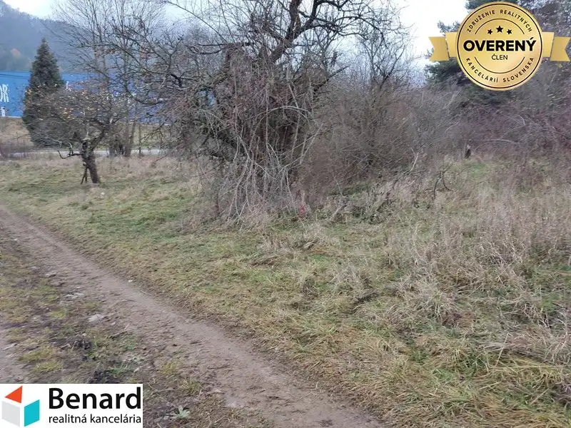

RODINNÝ DOM (4-IZB.), PREDAJ, POZEMOK 463 m2, DULOVA VES, ČASŤ ČERGOV
Dulova Ves






- Dispozícia4-izbový
- Plocha100 m²
- Vlastníctvoosobné
- Energetická triedaB
O nehnuteľnosti
Túžite bývať v tichej, okrajovej časti Prešova na rovinatom, slnečnom pozemku? Táto nehnuteľnosť je ako stvorená pre Vás. Rodinný dom, skolaudovaný v roku 2018, je jednopodlažný a je situovaný na krajnom pozemku komplexu radovej výstavby, s nenarušeným súkromím a pekným slnečným pozemkom. Zastavaná plocha a nádvorie je 127 m2 a záhrada s priedomím je o výmere 336 m2.
Rodinný dom pozostáva:
vstupná chodba, kuchyňa s jedálenskou časťou, obývacia izba, spálňa, 2x detská izba, kúpeľňa s WC, samostatné WC, technická miestnosť a špajza.
V zadnej časti domu je zastrešená terasa na ktorú ja východ z dennej časti a aj zo spálne. Na záhrade sa nachádzajú ovocné stromčeky, pestovateľské záhony a záhradný domček(náraďovňa).
Bezproblémové parkovanie pred domom.
Základné informácie:
- celková rozloha pozemku 463 m2, celý oplotený,
- zastavaná plocha 127 m2, úžitková plocha cca 100 m2,
- dom je v osobnom vlastníctve, možnosť hypotekárneho úveru,
- obvodové múry domu sú z tehly 300 + zateplenie 100, sadrokartónové vnútorné priečky,
- pultová strecha so strešnou fóliou FATRAFOL, zateplená fúkanou penou 300,
- plastové okná trojsklo,
- dom je napojený na všetky inžinierske siete,
- kúrenie (podlahové) a ohrev vody zabezpečuje kombinovaný plynový kotol so 115 l zásobníkom vody,
- kuchyňa je vybavená vstavanými spotrebičmi,
- v izbách a v kuchyni sú plávajúce podlahy, vo vstupnej chodbe keramická dlažba, v kúpeľni a WC keramický obklad a dlažba,
- predpríprava na rekuperáciu,
- nízke mesačné náklady,
- zariadenie domu po dohode,
Ak máte záujem o obhliadku, prípadne potrebujete viac informácii, nájdete nás v realitnom centre na Slovenskej 8 v Prešove, alebo na tel.č. .
ZADARMO K TEJTO NEHNUTEĽNOSTI DOSTANETE:
Ø preverenie právneho stavu a tiarch danej nehnuteľnosti;
Ø vysvetlenie problémov záložných tiarch, vecných bremien a pod.;
Ø právny servis zabezpečený právnikom s dlhoročnými skúsenosťami;
Ø kópiu LV prípadne katastrálnej mapy s kolkom na právne účely;
Ø poplatky za overenie podpisov na zmluvách u notára;
Ø správny poplatok za vklad vlastníckeho práva do katastra vo výške 100,-€
Ø realitné, daňové a právne poradenstvo;
Ø zabezpečenie znalca na vypracovanie znaleckého posudku;
Ø vypracovanie ponúk na zabezpečenie úveru u nášho hypotekárneho odborníka, ktorý spolupracuje so všetkými bankami,
Parametre
- Zastavaná plocha
- 127 m²
- Celková rozloha
- 463 m²
- Úžitková plocha
- 100 m²
- Počet poschodí
- 1
- Počet izieb
- 4
- Vlastníctvo
- osobné
- Status
- aktívne
- Voda
- verejný vodovod
- El. napätie
- 230/400V
- Plyn
- áno
- Kanalizácia
- áno
- Internet
- lokálny poskytovateľ
- Kúpeľňa
- vaňa
- Vykurovanie
- vlastné - plyn
- Terasa
- áno - 1
- Pivnica
- nie
- Parkovanie
- vlastné vyhradené
- Inžinierske siete
- áno
- Postavené z
- tehla
- Zateplený objekt
- áno
- Energetický certifikát
- B
- Okná
- plastové
- Terén
- rovina
- Prístupová cesta
- asfaltová cesta
- Novostavba
- áno
- Dátum zverejnenia
- 2025-09-25
Kde to je
Mohlo by Vás zaujímať

BytNové 133 000 €REZERVOVANÉ! 1 IZBOVÝ BYT NA PREDAJ, 40 m2, PREŠOV- KOTRÁDOVA UL. Prešov 1-izbový40 m²2. podlažie
BytNové 999 999 999 €3 IZBOVÝ NADŠTANDARDNÝ BYT, 79m2, PREŠOV, POD SKALKOU. Prešov 3-izbový79 m²
PozemokNové 23 840 €POZEMOK- ZÁHRADA 596 m2 , LIPOVCE. Lipovce 596 m²